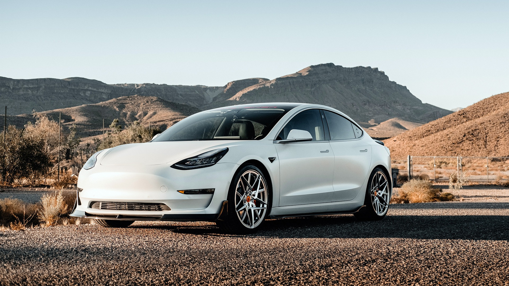

Why go Solar?
1/10/22
In 2022, it’s more important than ever to switch to solar power energy to reduce our climate impact. However, some people might be hesitant to switch if they feel it won’t be as good as an investment to make. After reading this article, I’m sure I will have convinced you to go solar!
Costs
Today I figured I would focus on the economics of solar panels. For some, it might seem like a hefty cost to switch to solar power energy. However, in the long term, you will not only be saving money, but saving the planet. The most expensive panels right now have the greatest efficiency. All there is the upfront cost of setting up the solar panels, so forget those electric bills for good! You will want to switch soon, since electric bills across the nation are rising.

Commercially available solar panels
Efficiency
The piece that everyone wants to know: do solar panels work? Typical solar panels today retain about 20% of the sun's rays as energy. That might seem low, but as long as you have the typical household amount of 20-25 panels then your house will always be fully operational. There are, however, many factors that can improve the efficiency of your solar panels, such as the angle of your roof, the temperature, and the type of panel you have. Panels are made out of silicon and different types have the silicon arranged in different ways to focus on either the efficiency or the appearance of the solar panels. Panel efficiency is also determined by the cell structure and, interestingly enough, the color of the panels. As technology advances, new materials will be used and developed to improve solar power technology especially with the recent focus on climate change.
Aesthetics
Typical solar panels come in black or blue, with black being less efficient since the temperature on the black solar panels are usually higher. However, the black solar panels usually blend in better. If aesthetics are a big concern, then look no further to the new Tesla solar panels. These sleek tiles will give your house that nice modern flair while also keeping the lights on. Tesla goes above and beyond to not only have fancy solar panels, but they also developed shingles that act as solar panels known as Solar Roof. Your neighbors won’t be able to tell your house is harnessing the sun with this amazing new piece of technology. Check this link out to view them yourself!
-Tommy Brown
Climate Clothing
3/2/22
For today’s blog post I’m going to focus on how the growing fast fashion industry/trend is increasing our climate impact. What we wear is constantly changing. The growth of fast fashion causes many to buy mass amounts of clothing to keep up with trends. This also means that clothing goes by the wayside and gets thrown out. You might not know this, but the release of greenhouse gasses is heavily involved in the process of actually making clothes. So if we are increasing the rate at which we make our clothes and the amount too, then the amount of carbon emissions also increases.
The Fashion Industry
According to the
MacArthur Foundation, 1.2 million metric tons of carbon is released each year by the fashion industry. So how is this possible? We got to look at what’s required to make the things we wear. The fashion industry needs wood pulp, so it cuts down huge amounts of forests. Polyester, another major material in the fashion industry, is a plastic made from fossil fuels which of course means more emissions. Even further the fashion industry, on average, uses about 70 million barrels of oil each year. This heavily affects our climate as we will use these materials more as this trend expands.
Clothing
In order to fix this, we need to try to change our habits when it comes to shopping. Thrifting is a fun way to find trendy clothes that helps by reusing old clothes instead of just throwing them away. If you do want to get rid of your clothes, then make sure to donate those clothes to a thrift store or shelter. Of course, there are plenty of options for you to help combat climate change without making major changes to your clothing.
Tentree
Tentree is a clothing company that is not only carbon-neutral but also they plant 10 trees for every article of clothing purchased. Since they are already net-zero, all they are doing is adding to the environment. All of their fabrics are made from organic cotton and Tencel.
Organic Basics
Another option is
Organic Basics. This clothing company is also carbon-neutral and also fully runs on renewable energy. Organic Basics prides itself on just how serious it is about making its whole process sustainable for the environment. On their website, they list all of the factories they work with, whom of course also are carbon-neutral. You can even visit these factories and Organic Basics welcomes you to.
-Tommy Brown
Driving Through Climate Change
3/3/22

New electric car design
Almost everyone by this point has heard how most cars contribute to climate change because of all of the gasses that they burn. Then of course you have probably heard someone say drive electric, ride your bike, carpool, or use public transportation. But how do we just make that switch when regular gasoline burning cars have been our normal choice for transportation? Today’s post will show you how.
Electric Cars
If you are looking to save money then your next car should almost definitely be an electric car. In terms of cost of fuel, on average, electric cars are costing about half the price you would pay for gasoline to drive your car the same distance. Now that’s just the long term price you would be saving on. In the short term, right now it is more expensive to buy an electric car than your standard gasoline car. However, electric car companies have been finding ways to reduce their prices rapidly as the need for electric cars grows. Many governments have even been offering tax incentives to buy electric cars.
Bikes
If you are thinking of commuting to work by riding your bike here’s how to start. First, you will want to just start off by trying it for one day a week. If you feel like you cannot return home, then just ask a coworker for a ride. Otherwise, if you plan on continuing, then you’ll want to gradually increase that amount of days a week you are riding your bike. Eventually you could be arriving early to your job every day. Don’t be worried about the Winter either. With proper gear, many commuters ride to work the whole year and never drive their car. Just make sure to pre-plan your route. You’ll want to make sure you drive in bike specific lanes if your city offers them. While you will have to invest in gear and a proper bike to be able to ride all year, you will save a lot of money compared to the gas prices you would have to pay with your car.
Public Transportation
Lastly, if you have access to public transportation, then that’s a perfect way to save money and be more eco-friendly than your car. Trains compared to cars have a lot less CO2 emissions than our cars. A train pass will also save you money then paying for gas. Also, you won’t have to worry about traffic and you can spend your time doing something other than having to focus on the road. The bus is also a great option since it is considered eco-friendly because multiple people won’t be driving meaning that’s less cars on the road that are releasing gasses into the air. And of course, you can always walk to work which is free and very much eco-friendly.
These are just some of the ways you can make the switch. Research what your city offers in terms of eco-friendly transportation. Making the switch can be less expensive and you are helping the planet by doing so.
-Tommy Brown
Image citations:
“House Solar Panels.” Pixabay, 14 Jan. 2022, https://pixabay.com/photos/house-solar-panels-architecture-6935453/. Accessed 3 Mar. 2022.
Street, Capital. “Tesla Car Road White.” Pixabay, 25 Jan. 2021, https://pixabay.com/photos/tesla-car-road-white-car-vehicle-5937063/. Accessed 3 Mar. 2022.